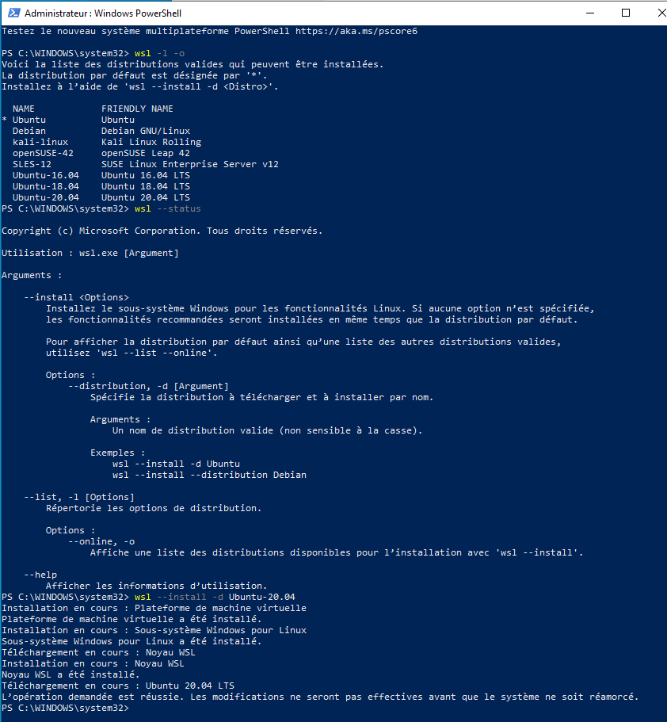

Pre-requirements of windows installations are the same for windows host installation in user mode. But you can avoid numpy and PyQt5 install commands since they will be managed while installing the mia project under ubuntu.
Once pre-requirements are acquired, you will need to install Wsl2 to host a virtual machine of ubuntu to install mia.
1- WSL2 (Windows Subsystem Linux) installation¶
- In an administrator type Windows account:
Windows 10 must be up to date
You need to have enough free space on your system disk : around 20 Gb
Open a PowerShell as administrator (right clic on powershell icon)
enter:
wsl --install -d Ubuntu-20.04

Reboot the computer
Normally a linux ubuntu window is already available, enter it:
enter a user / password who will be administrator of this linux (asked by the system)

then you can write your first commands to make ubuntu up to date:
sudo apt update
#at this first sudo command, the system may ask you to enter the password you just enter before.
sudo apt upgrade -y
exit
close this window
Now you have WSL2 and an Ubuntu 20.04 linux.
Before you install a new distribution using wsl --install -d distribution,
make sure that WSL is in 2 mode with: wsl --set-default-version 2 .
The distribution is only available for the current Windows user.
Usefull : in the Ubuntu WSL Windows terminal, we can access Windows files via /mnt/c/
2- X server installation in windows with VcXsrv¶
We also need a X windows server to allow linux applications graphic user interface (GUI) works.
- Get VcXsrv, then:
Execute it,
click ‘next’ then ‘install’ to install it
Looking for XLaunch application icon, launch it.
Configure it like the screenshots below:

Disable ‘Native opengl’ Enable ‘Disable access control’

Do ‘Save Configuration’ in a file that allow you to launch it later (ie on the Desktop)
Allow access asked by Windows firewall.
P.S: You have to make sure VcXsrv is running every time you to run a GUI via your Ubuntu linux distribution.
3 - Dependencies Installation¶
Open an Ubuntu session in Windows by:
click on Ubuntu new icon
or
open a normal Windows PowerShell,enter
ubuntu.20.04.exe
In this Ubuntu window terminal, install the following dependencies:
sudo apt install -y build-essential uuid-dev libgpgme-dev squashfs-tools libseccomp-dev wget pkg-config git git-lfs cryptsetup-bin python3-distutils python3-dev
# Ubuntu 20.04
sudo apt install python-is-python3
# Ubuntu 18.04
sudo ln -s python3 /usr/bin/python
4 - Singularity Installation¶
Then to allow singularity installation we need go language and some dependancies for compilation. If you anticipate needing to remove Singularity, it might be easier to install it in a custom directory using the –prefix option to mconfig. In that case Singularity can be uninstalled simply by deleting the parent directory.
Here are commands :
#Ubuntu 20.04
sudo apt install -y golang
#Ubuntu 18.04, singularity need golang version >= 1.13 wich is not available on ubuntu 18.04 (1.10 only)
cd /tmp &&\
wget https://golang.org/dl/go1.17.linux-amd64.tar.gz &&\
tar -xzf go1.17.linux-amd64.tar.gz &&\
sudo chown -R root:root go &&\
sudo mv go /usr/local/ &&\
rm go1.17.linux-amd64.tar.gz
echo 'export GOPATH=${HOME}/go' >> ~/.bashrc &&\
echo 'export PATH=/usr/local/go/bin:${PATH}:${GOPATH}/bin' >> ~/.bashrc &&\
source ~/.bashrc
See the section Prerequisites for Singularity on Linux. The 3.8.3 version link is available here.
You can install singularity like this :
#way1
wget https://brainvisa.info/download/singularity-ce_3.8.3~ubuntu-20.04_amd64.deb
sudo dpkg -i singularity-container-*.deb
sudo mkdir /opt/singularity
./mconfig --prefix=/opt/singularity
cd builddir
make
sudo make install
#way2
export VERSION=3.8.3 && # adjust this as necessary \
wget https://github.com/sylabs/singularity/releases/download/v${VERSION}/singularity-ce-${VERSION}.tar.gz && \
tar -xzf singularity-ce-${VERSION}.tar.gz && \
cd singularity-ce-${VERSION}
sudo mkdir /opt/singularity
./mconfig --prefix=/opt/singularity
cd builddir
make
sudo make install
Test it with /opt/singularity/bin/singularity version.
Then remove installation files.
Enter the repertory where you download the singularity install.
Use the command rm -R singularity-ce_3.8.3~ubuntu-20.04_amd64.deb if you installed via Way 1 or rm -R singularity-ce-${VERSION}* if you installed via Way 2.
You have completely installed a virtual Ubuntu which is now able to host mia. You can now follow steps from installation via populse mia installation in user mode.